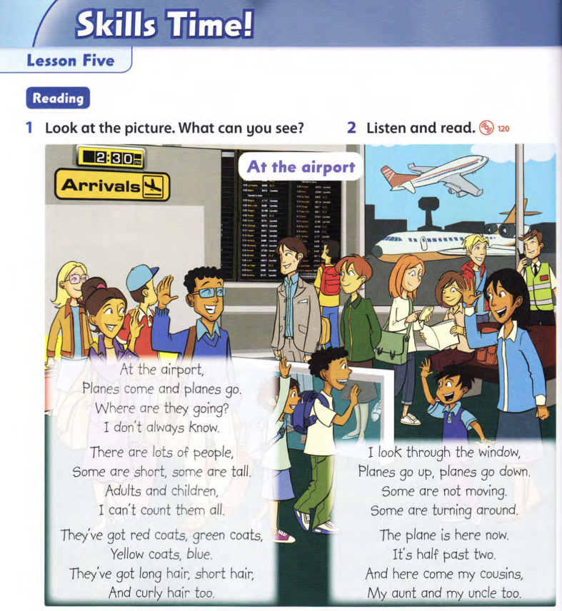

Family & Friends 2 - Unit 11 - Lesson 5
Nghe - Đọc - Dịch
Sẵn sàng
Hướng dẫn trả bài
- Bấm Nghe để luyện đọc theo từng từ màu vàng.
- Nghe nhiều lần để luyện phát âm đúng, ngữ điệu biểu cảm.
- Khi trả bài, con có thể quay màn hình và đọc theo.
- Sau đó, con dịch bài sang Tiếng Việt - Dịch sát nghĩa - tốc độ đủ nhanh.

Từ mới cần nhớ
Con xem nghĩa của từ và cấu trúc để hiểu bài. Khi trả bài, con tự dịch bài bằng Tiếng Việt.
- airport - sân bay.
- at the airport - ở sân bay.
- arrival / arrivals - chuyến đến / các chuyến đến.
- plane / planes - máy bay / những chiếc máy bay.
- come - đến.
- go - đi.
- come and go - đến rồi đi, qua lại.
- where - ở đâu, đến đâu.
- go / going - đi / đang đi.
- always - luôn luôn.
- know - biết.
- there - ở đó; trong There are ...: có ...
- lots of - nhiều, rất nhiều.
- person / people - một người / nhiều người.
- some - một số, vài người/vật.
- short - thấp, ngắn.
- tall - cao.
- adult / adults - người lớn / những người lớn.
- child / children - trẻ em / những trẻ em.
- can / can't - có thể / không thể. can't = cannot.
- count - đếm.
- them - họ, chúng; tân ngữ của they.
- all - tất cả.
- have got / 've got - có.
- they've - dạng viết tắt của they have.
- red - màu đỏ.
- green - màu xanh lá cây.
- yellow - màu vàng.
- blue - màu xanh dương.
- coat / coats - áo khoác / những chiếc áo khoác.
- long - dài.
- hair - tóc.
- long hair - tóc dài.
- short hair - tóc ngắn.
- curly hair - tóc xoăn.
- too - cũng; thường đặt ở cuối câu.
- look - nhìn.
- through - xuyên qua, qua.
- look through - nhìn qua.
- window - cửa sổ.
- up - lên.
- down - xuống.
- go up / go down - đi lên / đi xuống.
- not - không.
- move / moving - di chuyển / đang di chuyển.
- turn / turning - quay, rẽ / đang quay, đang rẽ.
- around - xung quanh, vòng lại.
- turn around - quay lại, quay vòng.
- here - ở đây.
- now - bây giờ.
- half - một nửa.
- past - qua; dùng khi nói giờ đã qua bao nhiêu phút.
- half past two - hai giờ rưỡi.
- cousin / cousins - anh/chị/em họ / những người anh/chị/em họ.
- aunt - cô, dì, thím, mợ.
- uncle - chú, bác, cậu, dượng.
- my - của tôi, của mình.
- and - và; nối từ hoặc ý cùng loại.
- look at - nhìn vào.
- picture - bức tranh, hình ảnh.
- listen and read - nghe và đọc.
- What can you see? - Con có thể nhìn thấy gì?
- can + động từ nguyên mẫu - có thể làm gì. can see, can count.
- at + địa điểm - ở/tại một địa điểm. at the airport.
- chủ ngữ số nhiều + động từ nguyên mẫu - hiện tại đơn. Planes come; planes go.
- Where are + chủ ngữ + động từ-ing? - hỏi ai/vật đang đi đâu hoặc làm gì ở đâu.
- Where are they going? - Họ đang đi đâu?
- am / is / are + động từ-ing - thì hiện tại tiếp diễn.
- don't = do not - dạng viết tắt của do not.
- I don't + động từ nguyên mẫu - tôi không làm/không biết ...
- don't always + động từ - không phải lúc nào cũng ...
- There are + danh từ số nhiều - có nhiều ...
- lots of + danh từ số nhiều - rất nhiều ... lots of people.
- Some are ..., some are ... - một số người/vật thì ..., một số khác thì ...
- be + tính từ - miêu tả đặc điểm. are short, are tall.
- danh từ số nhiều bất quy tắc - person → people; child → children.
- can't + động từ nguyên mẫu - không thể làm gì. I can't count ...
- động từ + tân ngữ - động từ tác động lên ai/vật. count them.
- They've got + danh từ - họ có ... They've = They have.
- màu sắc + danh từ - danh từ có màu ... red coats, green coats.
- tính từ + hair - miêu tả mái tóc. long / short / curly hair.
- And ... too. - và ... nữa/cũng vậy.
- look through + danh từ - nhìn qua ... look through the window.
- go + trạng từ chỉ hướng - di chuyển theo hướng ... go up, go down.
- be + not + động từ-ing - đang không làm gì. Some are not moving.
- be + động từ-ing - đang làm gì. Some are turning around.
- The plane is here now. - Bây giờ chiếc máy bay đang ở đây.
- It's = It is - dạng viết tắt của It is.
- It's half past + giờ - bây giờ là ... giờ rưỡi.
- Here come + danh từ số nhiều - ... đang đến đây; đảo come lên trước chủ ngữ.
- my + danh từ gia đình - người thân của tôi. my cousins, my aunt, my uncle.
- danh từ số nhiều - thường thêm -s/-es. planes, coats, adults, cousins.